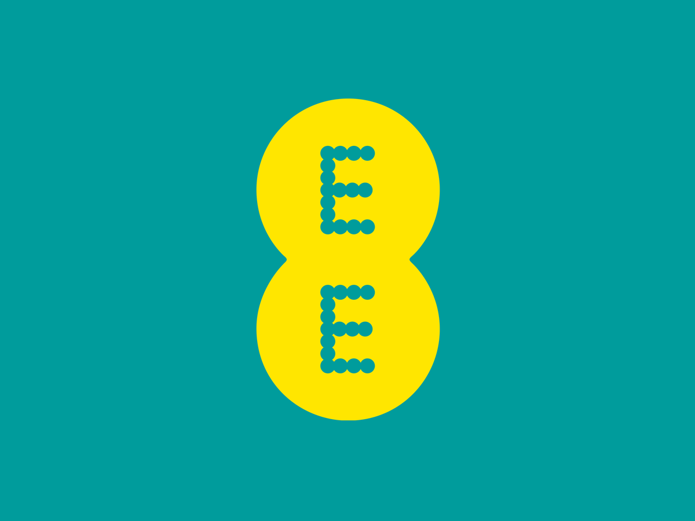
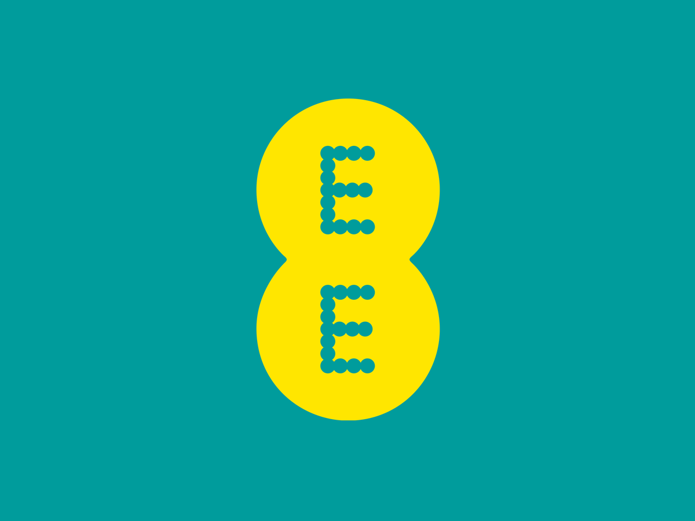

Awards & Press
Awards:
- Campaign Media Awards Gold
- Innovation Award - The Drum Awards
- 5 x British Arrows Nominations
- Visionary Arts Awards TV Advert of the Year Nomination
- First Prize - Ocean Digital Creative Competition 2022
- Cream 2021
- Cream 2020
Press:
- The Drum Ad of the Day
- Campaign Magazine
- The Mirror
- The Daily Mail
- Edinburgh News
- Refinery29
- The Scotsman
- Elle France
- Vogue UK